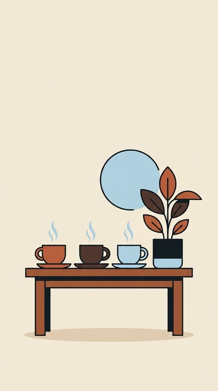

2 a 3 xícaras por dia. Menos ansiedade?
Pesquisadores da Universidade Fudan acompanharam 461.586 pessoas por 13 anos. Quem tomava de 2 a 3 xícaras por dia teve o menor risco de transtornos de humor e de estresse.
ler a matéria →
blog · além dos 07h30
as versões longas das notícias e curiosidades do Instagram: números completos, contexto e fontes clicáveis.
Cepea/Esalq R$ 1.601,95 por saca (23.10) · conilon R$ 936,73, -0,58% no dia
as postagens
filtro por tipo · tudo que sai no IG ganha casa aqui.
Pesquisadores da Universidade Fudan acompanharam 461.586 pessoas por 13 anos. Quem tomava de 2 a 3 xícaras por dia teve o menor risco de transtornos de humor e de estresse.
ler a matéria →
“The Family Link”, a bebida autoral do campeão mundial Pan Wei, juntou espresso gelado, mel de cereja de café, mosto e água com gás. A versão caseira cabe em três ingredientes.
ler a matéria →Em setembro o Brasil exportou 3,9 milhões de sacas, alta de 3,1%, mas a receita caiu 7,1%. No ano, o conilon subiu 68% e os cafés diferenciados caíram 16,3%.
ler a matéria →Coffee Five, no Rio, lidera o ranking das 50 melhores cafeterias do Brasil em 2026. Quatro das dez primeiras são cariocas, e a nº 8 fica em Espera Feliz (MG).
ler a matéria →Análise de 20.460 adultos dos EUA: quem concentra o café de manhã teve 17% menos chance de resistência à insulina grave. Quem toma café o dia todo não mostrou o mesmo padrão.
ler a matéria →Chuvas antecipadas abriram uma florada forte no Sul de Minas, no Cerrado, na Mogiana, nas Matas de Minas e no Espírito Santo. O desafio agora é o pegamento dos frutos.
ler a matéria →O pacote de 500 g caiu 19% em um ano no varejo do Paraná, para R$ 23,90, segundo o Deral. A saca ao produtor recuou cerca de 10% em outubro.
ler a matéria →20 g de Gesha panamenho e 50 g na xícara: a proporção de 1 para 2,5 do espresso do campeão mundial Pan Wei, mais longa que o espresso clássico.
ler a matéria →O método do James Hoffmann em quatro passos: 30 g de café, 500 g de água, 4 minutos sem mexer e mais 5 a 8 minutos de espera. O êmbolo vira tampa, não filtro.
ler a matéria →O chinês Pan Wei venceu o World Barista Championship 2026 no Panamá com dois Gesha e uma bebida autoral gaseificada. Em 2024, tinha ficado em 27º.
ler a matéria →as calorias diárias vindas do café nos EUA subiram de 43 para 60 entre 2003 e 2018, com o volume consumido estável. O creme não lácteo virou a maior fonte, à frente do açúcar e do leite.
ler a matéria →o sódio reduz a resposta de alguns receptores de amargo sem deixar a bebida salgada. O efeito muda com o grão, a torra e o método. A prática é antiga na Turquia, na Etiópia e no Vietnã.
ler a matéria →uma saca de 60 kg de café de Carmo de Minas foi arrematada por US$ 200 a libra em um leilão da ACE no Japão. A conta, feita com o dólar de 15 de outubro, fecha em R$ 134.581,67.
ler a matéria →pela primeira vez, o World Barista Championship e o World of Coffee acontecem na América Latina. O Panamá recebe mais de 50 campeões nacionais em quatro dias de prova, com 15 minutos por apresentação e 12.
ler a matéria →trinta e duas variedades, 30 sítios de pesquisa, 17 países e oito anos de dados de campo. O maior ensaio coordenado já feito com arábica colocou lado a lado plantas de todo tipo de clima e chegou a uma.
ler a matéria →sentar sem pedir deixou de ser uma opção. Desde quinta-feira, 22 de outubro, a Starbucks exige uma compra para liberar mesa nas mais de 8.000 lojas que mantém na China.
ler a matéria →em mercados maduros, cafeterias de especialidade começaram a vender pour overs de US$ 20 ou mais, com lotes vencedores de competição e grãos congelados por mais de um ano. Poucos clientes pedem.
ler a matéria →aquele pó molhado que vai para o lixo depois do coado virou objeto de pesquisa na UFLA. Extratos de borra de café tradicional e especial entraram no doce de leite, e a versão com até 5% passou no teste de.
ler a matéria →em quintais do nordeste paraense, famílias mantêm pés de café que passaram de geração em geração. Embrapa e UFRA confirmaram arábica e a rara liberica em 57 espécimes georreferenciados, em 8 propriedades de 5.
ler a matéria →duas cafeterias em Porto Alegre ficaram embaixo d'água nas enchentes. Em vez de reabrir o salão, os sócios César Mincato e Thiago Fiamengui montaram uma fábrica de café gelado em lata: R$ 500 mil investidos.
ler a matéria →o café coado da sua cozinha pode estar diferente, e não é impressão. A indústria mudou a composição dos blends tradicional e extraforte, e o conilon ganhou espaço na mistura que sempre foi dominada pelo.
ler a matéria →a cidade da Chapada Diamantina é a única do Nordeste entre os 150 classificados para a fase nacional do Cup of Excellence Brazil 2026.
ler a matéria →em setembro, os Estados Unidos importaram 625.192 sacas de café do Brasil, 86,4% mais do que no mesmo mês de 2025.
ler a matéria →em 1905, o inverno de Palermo matou os 25 pés de café plantados no Jardim Botânico da cidade. Hoje a família Morettino colhe cerca de 100 quilos de frutos por ano na mesma região, sem estufa nenhuma, a 350.
ler a matéria →karnataka, que produz 70% do café da Índia, pode encolher de 15 a 20% na safra 26/27, avisa a associação dos plantadores.
ler a matéria →o inverno chuvoso de julho pegou 30% da safra 26/27 no campo e ameaça a bebida. no bolso do produtor, 19,4% mais café para o mesmo adubo.
ler a matéria →a bateria em 14% e a ciência do gole: a cafeína bloqueia o sinal de sono, fica de 2 a 12 horas no corpo e o corte da Sleep Foundation é de 8 horas.
ler a matéria →a safra 2026 fechou em 67,6 milhões de sacas, e 34,96 milhões nascem em Minas Gerais: 51,7% de tudo, mais que o resto do Brasil junto.
ler a matéria →o café subiu até 3,8% na NY na segunda, o dólar fechou a R$ 5,00 e a saca brasileira caiu no Cepea. a tesoura do câmbio, explicada na ponta do lápis.
ler a matéria →do banheiro à levotiroxina: sete efeitos documentados do café no corpo, com as ressalvas onde a ciência ainda não sabe explicar. os estudos estão linkados no fim.
ler a matéria →o Brasil exportou 24,6 milhões de sacas de janeiro a agosto, 6,6% a menos que em 2025. e agosto, sozinho, bateu recorde: 3,8 milhões (+43,2%). como os dois cabem na mesma história.
ler a matéria →o recorde de exportação de agosto (3,8M, +43,2%) e as três janelas de números: fluxo mensal, safra do ano civil e ano-cafeiro.
ler a matéria →a arábica domina o mapa do café brasileiro, e o conilon ganha terra devagar. o retrato por região está no post.
ver post ↗a opinião da casa sobre por que o pacote não barateia: a política de preço explica menos que o estoque baixo e o dólar.
ver post ↗sem sair do mapa: o estado é o segundo maior produtor do país e responde por 25% das sacas nacionais.
ver post ↗um estudo de microbioma colocou o café no topo da lista; o que a ciência mostra, e o que ainda não sabe.
ver post ↗o USDA projeta 71,9M de sacas para o ano-cafeiro; o preço cai devagar, e a fila de navios explica o resto.
ver post ↗a safra recorde da série confirmada em 24.09, com alta de 19,6%.
ver post ↗250 lojas fechadas; o que o corte diz do consumo fora de casa.
ver post ↗US$ 1 milhão para genética e sustentabilidade do café.
ver post ↗a previsão do ciclo 2026/27 sustenta preços e ameaça a próxima safra; o clima é o que move o preço daqui em diante.
ver post ↗por que a lavoura produz mais num ano e menos no outro.
ver post ↗o país do chá bate recorde de consumo de café; a virada do hábito, em números.
ver post ↗55 gramas por litro: a conta que tira o achismo da extração.
ver post ↗por que a safra recorde ainda não chegou ao balcão: janelas, estoques e paciência, na opinião da casa.
ver post ↗datas "set. 2026" = posts do cofre produzidos em 27.09; as artes e legendas completas ficam no cofre de conteúdo.